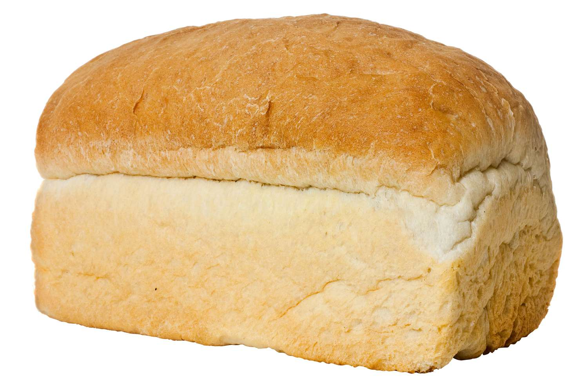

Bread

Bread is a common food that everybody eat almos every day and goes well with many different dishes and moments.
Ingredients
- 500g of white flour
- 2 table spoon of salt
- 7g of yeast
- 3 table spoon of oil
- 300ml of water
Steps
- Mix the flour, the salt and the yeast in a bowl
- Add the oil and the water and mix
- Tip onto a lightly floured work surface and knead for around 10 mins
- Once the dough is satin-smooth, place it in a lightly oiled bowl and cover with cling film
- Let it rest until it doubled it size
- Heat the oven to 200 degrees
- Bake for 25-30 mins